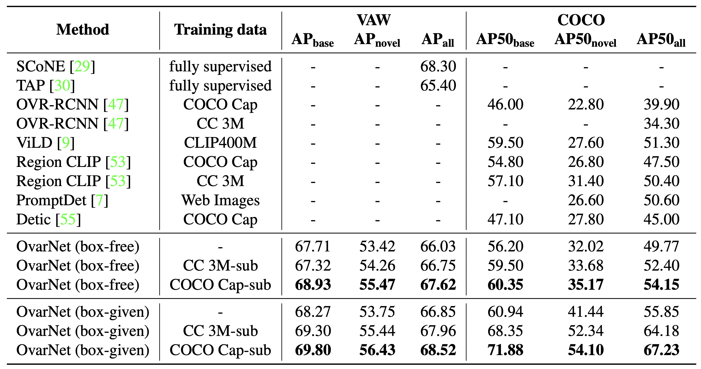
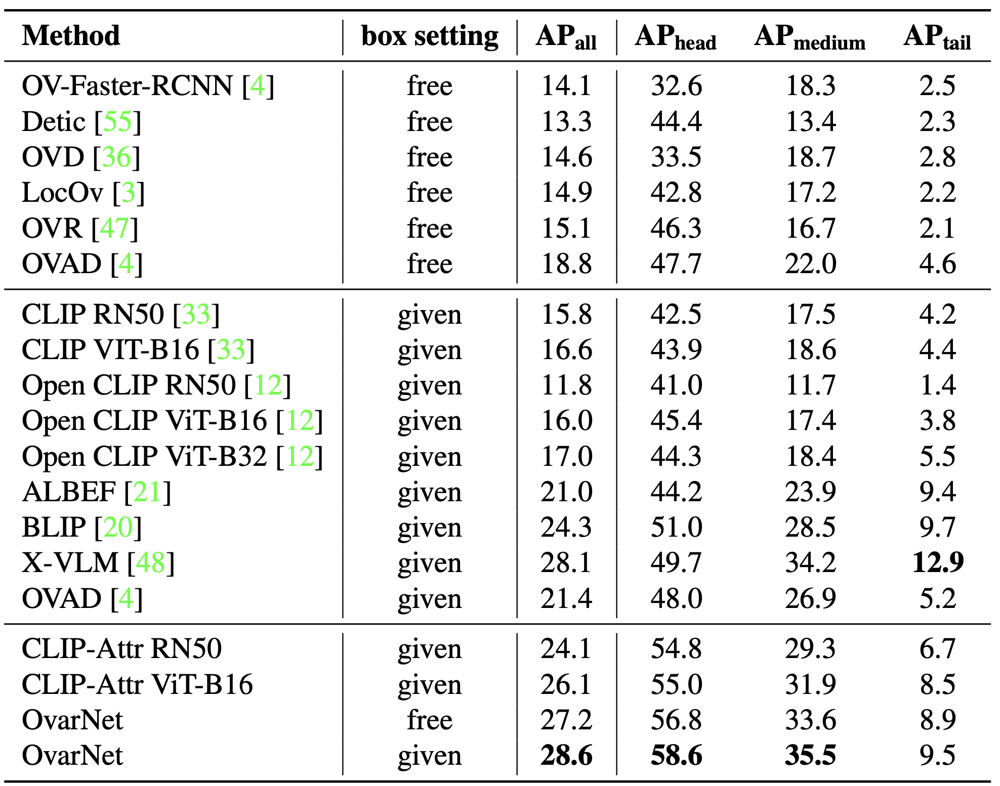

|
R1: Benchmark on COCO and VAW Datasets
In the Tab., we compare the OvarNet to other attribute prediction methods
and open-vocabulary object detectors on the VAW test set
and COCO validation set. Because there is no open-vocabulary
attribute prediction method developed on the VAW dataset,
we report two methods with strong performance,
that were trained on the full VAW dataset as
an oracle comparison, SCoNE and TAP. We choose the presently
popular state-of-the-art methods,
including OVR-RCNN, ViLD, Region CLIP,
PromptDet, and Detic, to participate in the comparison
for open-vocabulary category prediction. Our best model achieves
68.52/67.62 AP across all attribute classes for the box-given
and box-free settings respectively. For open-vocabulary detection,
our best model obtains 54.10/35.17 AP for novel categories,
surpassing the recent state-of-the-art ViLD-ens and Detic by a large margin.

|
R2: Benchmark on LSA Dataset
Pham et al. proposed OpenTAP with a Large-Scale
object Attribute dataset (LSA). LSA aggregates all images,
their parsed objects and attributes of
the Visual Genome (VG), GQA, COCO-Attributes,
Flickr30K-Entities, MS-COCO, and a portion of Localized Narratives (LNar).
In the paper, OpenTAP studies the generalizability
to unseen attributes in two ways:
LSA common (4921 common attributes for the base set,
605 common attributes for the novel set);
LSA common → rare (5526 common attributes for
the base set, 4012 rare attributes for the novel set).
As OpenTAP employs a Transformer-based architecture with
object category and object bounding box as the additional
prior inputs, we have evaluated a 2-fold architecture
setting in the proposed OvarNet. One is the original OvarNet
without any additional input information;
the other integrates the object category embedding
as an extra token into the transformer encoder
layer. The following Tab. shows the comparison results
with other methods. It indicates that OvarNet outperforms
prompt based CLIP by a large margin and surpasses OpenTAP
with additional category embedding.

|
R3: Cross-dataset Transfer on OVAD Benchmark
We compare with other state-of-the-art methods in OVAD benchmark,
reported by OVAD.
OVAD introduces the open-vocabulary attributes detection
task with a clean and densely annotated attribute evaluation
benchmark. The benchmark defines 117 attribute classes with
over 14,300 object instances. Following the same evaluation
protocol, we conduct zero-shot cross-dataset transfer evaluation
on OVAD benchmark with CLIP-Attr and OvarNet trained on COCO
Caption dataset. Metric is average precision (AP) over
different attribute frequency distribution, 'head', 'medium',
and 'tail'. The methods for the comparison are OV-Faster-RCNN,
Detic, OVD, LocOv, OVR, CLIP, OpenCLIP, ALBEF, BLIP,
X-VLM, and OVAD provided in OVAD benchmark.
The following Tab. presents that our method outperforms
others by a large margin.

|